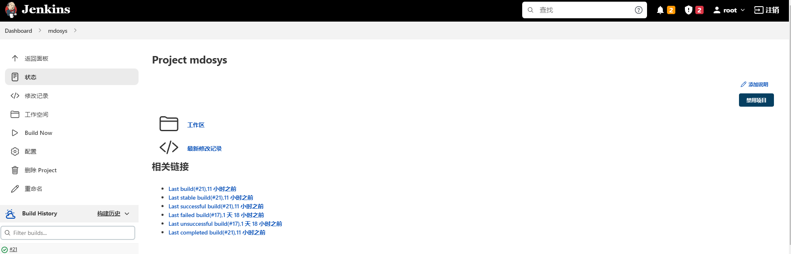

CI/CD的核心概念是持续集成，持续交付，持续部署。通过自动化工具，将代码上传，编译，测试，打包，部署等操作按照一定的规范集成组合成PipeLine，极大地减少了编码到部署过程中的工作量。
本次项目采用CI/CD的方式进行自动化部署，且在实现用户自定义微服务扩展功能时，也可采用CI/CD流程中的部分功能，在集群中集成新的微服务。
本项目采用的自动化部署方案为：Gogs私有仓库+Jenkins持续集成工具+Harbor镜像仓库+Kubernaetes集群管理系统；在定义好编译，打包，部署规则后，可实现代码提交后的自动化编译，打包，部署或更新。下面将对方案中的工具进行介绍。PieLine全流程如图所示
Gogs是一款基于Git的开源文件/代码管理系统，相比于GitHub，Gogs更加简单，快速，且极易搭建，因此选择Gogs作为本次项目的git私有仓库。
在搭建仓库时，使用docker的方式进行，使得仓库的部署不熟linux本身环境的影响，具备高可移植性。
使用官方提供的docker命令搭建时，指定好对外映射的端口，选择数据地址，并设置自启动，即可完成仓库的搭建。图形化界面如下：
Jenkins是一款开源的CI工具，可根据设定，运行响应代码，且拥有有好的用户界面，活跃的社区，大量的插件，相比于新兴的Drone，Jenkins的文档，方案更加完善、成熟，因此本项目并未选择Drone，而是Jenkins作为CI工具。
搭建Jenkins时需要注意，Jenkins搭建需要java环境，但是自v2.357版本之后，Jenkins只支持java11及更高的java版本，因此在搭建时选择v2.346.1版本。
安装好Jenkins的war包之后，可以编写开启与关闭的shell脚本，同时在开启脚本中指定端口，并在default.json中修改成国内镜像源；浏览器中输入ip:端口号，访问Jenkins页面，并按照提示输入初始化密码。
登录后选择安装推荐插件并创建一个管理员账号，即可进入Jenkins主页面。
Docker官方提供有私有镜像仓库服务registry，但服务较为轻量化，无UI管理界面，维护成本较高，因此在本次项目中选择基于registry二次开发的Harbor开源私有镜像仓库，该服务提供了管理UI，基于角色的访问控制，AD/LDAP集成，日志审计，同时支持原生中文，弥补了registry的不足。
部署Harbor可在官网下载任意版本安装包，也可在线下载最新版本安装，本次使用的版本为v2.6.1，安装前，需要安装docker-compose;安装包解压之后，在yml配置文件中修改访问地址、http端口号、数据库信息、数据挂载目录等等。执行install.sh进行部署；访问Harbor主页面跳转到登录页面，使用初始账号进行登录即可，Harbor默认创建一个library公开项目，也可自行创建自己的项目。最终效果如下：
Kubernetes是一个全新的基于容器技术的开源分布式架构解决方案(下面简称k8s)，k8s能够提供完善的管理工具，集群管理能力，具有自我修复，弹性伸缩，自动部署和回滚，服务发现和负载均衡等功能，因此采用k8s作为集群管理系统。
k8s在部署时，至少需要准备3台主机，CPU内存大于2GB，核心个数大于2；集群内的主机能够互相通信；禁止swap分区等等。在所有主机上关闭防火墙，swap，selinux，并使用ntpdate同步时间。
所有主机安装，kubeadm，kubelet，kubectl，并指定一台主机作为Master节点，其余主机作为node节点加入集群，使用kubectl命令获取所有节点信息，如下所示，节点状态为ready表示添加成功。
基本组件部署成功之后，即可将各个组件连接，形成一条完备的PipeLine。
在Gogs中创建一个私有仓库，并使用IDE上传项目。
在Jenkins中创建同名Item,并配置Git项目路径，账号信息，构建触发器，编写出发后运行的脚本内容。

Gogs中在对应仓库设置Web钩子，填写Jenkins地址，并添加钩子触发的事件。
同时在Harbor中创建项目。
Jenkins中编写编译jar包，镜像打包，镜像上传脚本，及后续k8s项目部署。
在Gogs中推送测试，触发web钩子
Jenkins接收到推送，并执行脚本任务。
在构建信息详情中可查看控制台输出。Jenkins拉取git代码，编译打包成jar包，并生成镜像文件上传至Harbor仓库，最终由k8s部署。
在Harbor中可见Jenkins上传的镜像文件。
在k8s中可以看到，镜像文件部署在node1节点上。
若用户需要自定义微服务扩展，只需上传微服务jar包，以及所需的运行环境等等。借助CI/CD流程中的部分组件，实现上传到部署的自动化。整体流程如下图所示：
该部分会提供一个微服务支持功能的实现。同时用户在扩展微服务时可以使用提供的组件自定义微服务功能。